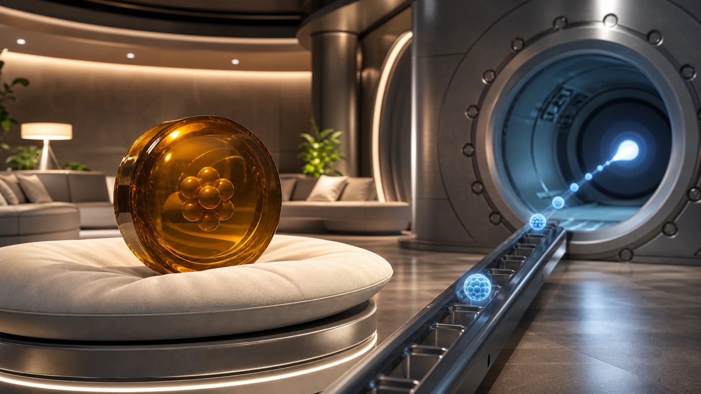
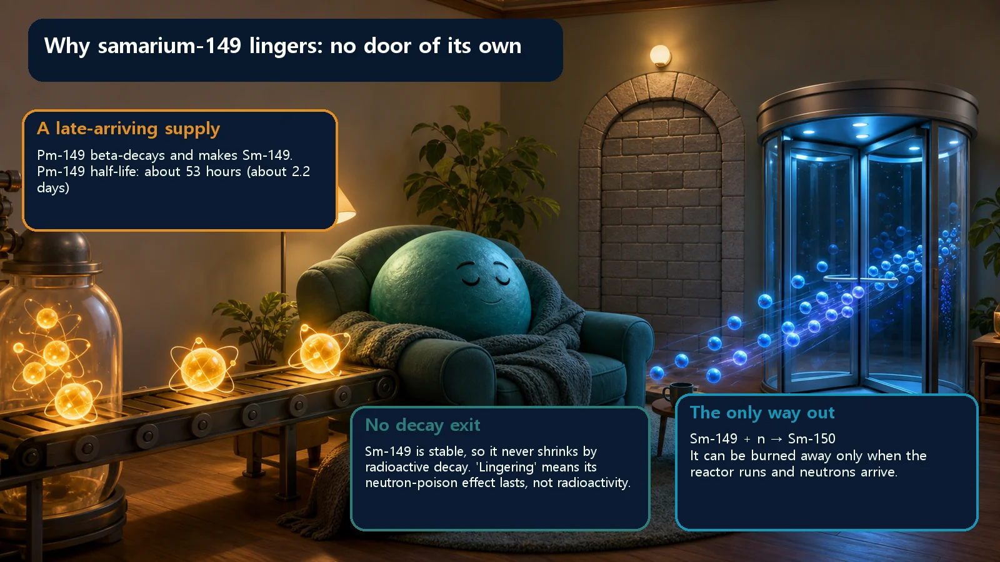
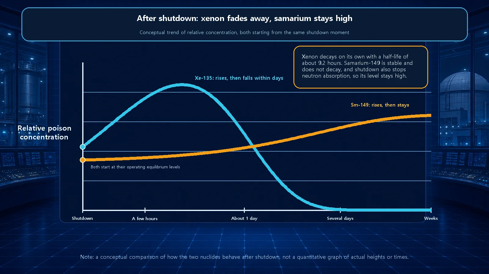

Long-Term Core Behavior & Fuel Cycle · 162
The Guest Who Won't Leave the Couch — Why Samarium-149 Lingers in the Core
Samarium-149 cannot decay away, so once the neutrons stop, nothing removes it, and promethium-149 keeps adding more.

Samarium-149 is a fission-product neutron poison, and unlike xenon-135 it is a stable nuclide. It is fed by the decay of promethium-149 (half-life about 53 hours) but can leave only by absorbing a neutron and becoming samarium-150. When a reactor shuts down, that only exit closes while promethium keeps adding samarium, so the samarium level rises and then stays high.
At any house party, most guests eventually say "I'd better be going" and leave on their own. But there's always one sunk deep into the couch, showing no sign of getting up. Even after the lights go off, this guest stays put until someone walks over and sees them to the door.
A reactor core has these two kinds of "guests" too. Some substances produced by fission eat neutrons and quietly whittle away the reactor's strength. One of them disappears on its own within hours. Today's star, samarium-149, almost never leaves on its own. Why does this one guest linger so long?
So what is samarium-149?
Samarium-149 is one of the many by-products created when fuel such as uranium undergoes fission, and reactor physics calls substances like it neutron poisons.
Don't let the word "poison" alarm you. It doesn't mean chemically toxic or harmful to your body at all. In a reactor, a poison is simply a neutral technical term for a substance that absorbs neutrons readily and so eats into the reactor's capacity to keep the chain reaction going (its reactivity).
But samarium-149 has one decisive feature that clearly sets it apart from other by-products: it is a stable nuclide. It is not radioactive, so it never decays into something else on its own. This one fact is the key to today's question.
How it is born: from an unstable parent to a stable child
When a fuel nucleus splits, all sorts of fragments fly out. The family with a mass of about 149 goes through a few transformations and ends up at samarium-149.
Fission first produces a substance called promethium-149 (there is one more step just before it, but it passes in a flash, so we'll skip it). Promethium-149 is an unstable, radioactive substance. Its half-life is about 53 hours, so in a little over two days half of it decays on its own. And the destination of that decay is samarium-149.
Here's where it gets interesting. The parent, promethium-149, can't hold itself together and decays into samarium, but the child born that way, samarium-149, is stable and never changes into anything else. The chain of transformations comes to a dead stop at samarium.

Only one door out
A substance in the core usually disappears by one of two routes, two doors a guest can leave by: "walk out on your own (decay)" and "be shown out by someone (neutron absorption)."
Samarium-149 has no first door at all. It is a stable nuclide, so the route of disappearing by its own decay is blocked from the start. Only one door remains: absorbing a neutron and turning into samarium-150. Once it becomes samarium-150, its ability to catch neutrons drops sharply, and it effectively "graduates" from being a poison.
While the reactor runs at full strength, the core is full of neutrons, so samarium keeps absorbing them and is steadily removed. It settles at an equilibrium concentration, where the amount newly made balances the amount removed.
The problem comes when the reactor is shut down. Shut it down and the neutrons almost vanish, and neutrons were the only door samarium had. The only exit closes. On top of that, regardless of the shutdown, the promethium-149 still in the core keeps decaying at its own pace and makes more samarium. The exit is closed but guests keep arriving, so after shutdown the samarium concentration actually rises for a while. Having climbed to a higher value, and unable to decay, it then stays planted at that high level. It hardly decreases until the reactor is started up again and neutrons shine on it. That's why samarium-149 is often called a permanent poison.
The guest who leaves, and the guest who settles in
The reactor has another famous neutron-eating guest similar to samarium: xenon-135. Put the two side by side and samarium's personality becomes obvious.
Xenon-135 is radioactive, with a half-life of about 9 hours. In other words, its "walk out on your own" door is open. So when the reactor shuts down, xenon briefly shoots up and then decays away on its own over a few days, like a guest who has fun for a few hours and goes home on foot. Samarium-149, being stable, has no such door, and once it settles in, it never leaves on its own.
There's also an interesting twist. In sheer neutron-catching ability, xenon is dozens of times stronger than samarium. So for "nuisance per guest," xenon wins by a landslide. Samarium still can't be ignored, not because it absorbs strongly, but because it never disappears, keeps piling up and stays a long time. Xenon is "strong but brief"; samarium is "weaker but permanent."

Putting it very simply
Even without complicated equations, we can sum up in one line why samarium lingers. Write the rate at which a substance disappears like this:
Rate of disappearance = (share that decays on its own) + (share absorbed by neutrons)
For xenon, both terms on the right are alive. But samarium-149 is stable, so the first term is zero.
Rate at which samarium disappears = 0 (no decay) + (share absorbed by neutrons)
So when there are no neutrons (reactor shut down), the whole right side drops close to zero, and samarium doesn't go anywhere.
Common points of confusion
First, it's easy to hear "lingers" as "dangerous radioactivity lingers," but that's not it at all. Samarium-149 is a stable nuclide and gives off no radiation. "Lingering" here doesn't mean radioactive contamination; it means the state of absorbing neutrons and cutting reactivity continues. It isn't a radiation-safety issue but an issue of neutron economy, of making careful use of the neutrons the reactor has.
Finally, it's best not to oversimplify this as "the stronger absorber is the bigger problem." Per atom, xenon absorbs far more than samarium, but the two matter in different situations. Xenon is the guest that demands attention in short-term operating phases, such as changing power or shutting down and starting up, while samarium is more of a background presence that trims a little off the core's reactivity margin over the long run.
That's why designers build the reactivity that samarium will take away over the long term into their calculations from the outset. Samarium isn't an accidental defect or an incident; it is a normal phenomenon that naturally accompanies fission, and something reactor design and operation always anticipate and manage.
Today's takeaways
- Samarium-149 is a neutron poison (a substance that absorbs neutrons and cuts reactivity) produced by fission, and its defining feature is that it is a stable, non-radioactive nuclide.
- There are normally two doors out (decaying on its own / absorbing a neutron), but samarium is stable, has no decay door, and disappears only by neutron absorption, so without neutrons it doesn't go away.
- When the reactor shuts down, the only removal route (neutron absorption) stops while leftover promethium-149 keeps decaying and adding samarium, so after shutdown samarium actually rises and then stays put (a permanent poison).
- Both are poisons, but xenon-135 also disappears by decay and is gone within days, while samarium-149 is stable and never disappears on its own: xenon "strong but brief," samarium "weaker but permanent."
- "Lingering" here means a continuing reactivity loss from neutron absorption, not radioactivity, and it is a normal phenomenon accounted for and managed from the design stage.
Run a reactor for a long time and the composition inside the fuel quietly shifts: some guests come and go, others settle in. Eventually the moment comes to swap in fresh fuel and rearrange the core, which is where we'll head next.